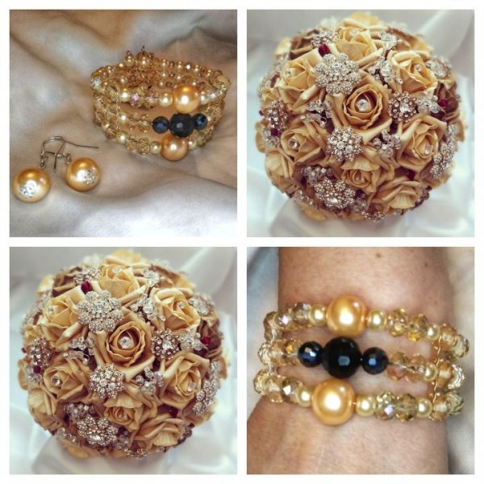

Sidabrinės apyrankės internetu | silvera.lt
 English По-русски Registruotis Prisijungimas Prisijungimas Prekių krepšelis Krepšelis tuščias. Viso prekių už 0 00 € Peržiūrėti krepšelį+370 65042464 Parašykite mums
Auskarai Sidabriniai auskarai su akmenimis Sidabriniai auskarai be akmenų Sidabriniai auskarai vaikams Auksiniai auskarai Apyrankės Sidabrinės apyrankės su akmenimis Sidabrinės apyrankės be akmenų Vyriškos sidabrinės apyrankės Apyrankės su siūlu Auksinės apyrankės Grandinėlės Sidabrinės grandinėlės Sidabrinės grandinėlės ant kojos Sidabriniai koljė Vyriškos sidabrinės grandinėlės Vėriniai iš perlų Auksinės grandinėlės Pakabukai Sidabriniai pakabukai su akmenimis Sidabriniai pakabukai be akmenų Sidabriniai kryželiai ir medalionai Sidabrinės širdelės Sidabriniai Zodiako ženklai Pakabukai apyrankėms Auksiniai pakabukai Žiedai Sidabriniai žiedai su akmenimis Sidabriniai žiedai be akmenų Vyriški sidabriniai žiedai Auksiniai žiedai Segės Kiti gaminiai Sidabriniai šaukšteliai Sidabrinės dovanos krikštynoms, komunijai Sidabriniai kaklaraiščio segtukai Sidabrinės sąsagos Sidabriniai suvenyrai Sidabriniai laikrodžiai Dovanų dėžutės Auskarai Sidabriniai auskarai su akmenimis Sidabriniai auskarai be akmenų Sidabriniai auskarai vaikams Auksiniai auskarai Apyrankės Sidabrinės apyrankės su akmenimis Sidabrinės apyrankės be akmenų Vyriškos sidabrinės apyrankės Apyrankės su siūlu Auksinės apyrankės Grandinėlės Sidabrinės grandinėlės Sidabrinės grandinėlės ant kojos Sidabriniai koljė Vyriškos sidabrinės grandinėlės Vėriniai iš perlų Auksinės grandinėlės Pakabukai Sidabriniai pakabukai su akmenimis Sidabriniai pakabukai be akmenų Sidabriniai kryželiai ir medalionai Sidabrinės širdelės Sidabriniai Zodiako ženklai Pakabukai apyrankėms Auksiniai pakabukai Žiedai Sidabriniai žiedai su akmenimis Sidabriniai žiedai be akmenų Vyriški sidabriniai žiedai Auksiniai žiedai Segės Kiti gaminiai Sidabriniai šaukšteliai Sidabrinės dovanos krikštynoms, komunijai Sidabriniai kaklaraiščio segtukai Sidabrinės sąsagos Sidabriniai suvenyrai Sidabriniai laikrodžiai Dovanų dėžutės Pradžia / ApyrankėsPrekių filtras
Valyti Intarpas Valyti Be akmenų Cirkonas Swarovski kristalas Katės akis Koralas Perlas Oniksas Hematitas Kairo naktis Malachitas Gintaras Saulės smėlis Emalis Markazitas Perlamutras Avantiurinas Keramika Kitas Apyrankės ilgis Valyti 14 cm 16 cm 16,5 cm 17 cm 17,5 cm 18 cm 18,5 cm 19 cm 19,5 cm 20 cm 20,5 cm 21 cm 21,5 cm 22 cm 22,5 cm 23 cm 23,5 cm 24 cm Pynimas Valyti Pancer Nonna Bismark Rombo Garibaldi Figaro Corda Fantasia Snake Byzantine Kitas MarinaPagalba
Akcijos Naujos prekės Populiariausios prekės Pirkimo sąlygos Priežiūros patarimai KontaktaiApyrankės
Sidabrinės apyrankės – puiki dovana ypatingomis progomis
Sidabras yra vienas labiausiai vertinamų tauriųjų metalų, tad nieko nuostabaus, kad iš jo pagaminti papuošalai yra tokie populiarūs. Bėgant metams sidabro vertė nemažėja: sidabro ištekliai kasmet tampa vis mažesni, tad natūralu, jog tai atsiliepia ir šio tauriojo metalo kainai. Kai ieškoma dovanos tam tikromis ypatingomis progomis, sidabrinės apyrankės neabejotinai gali būti vienu geriausiu pasirinkimu: tokie papuošalai džiugina metų metus, tad solenizantas, segėdamas tokią apyrankę, tikrai galvos apie jus. Šiuo metu siūlomų sidabrinių apyrankių asortimentas yra tikrai labai gausus, tad ieškant tinkamiausių pasirinkimų patartina atkreipti dėmesį į keletą svarbiausių kriterijų. Taigi, į ką vertėtų atsižvelgti?
Sidabrinės apyrankės ilgis
Be jokios abejonės, visada yra siekiama, kad padovanotas papuošalas puikiai tiktų, todėl būtina atsižvelgti į tai, koks yra siūlomų apyrankių ilgis: vienos jų yra skirtos labai smulkiam riešui, kitos – stambesniam, tad tikrai galėsite rasti jums labiausiai tinkančias galimybes. Jei apyrankę rinksitės internetu, rasite išsamius prekių aprašymus, o tuomet, jei apsilankysite fizinėje parduotuvėje, turėsite galimybę apžiūrėti siūlomas prekes gyvai, ir pasirinkti labiausiai tinkantį papuošalą.
Apyrankės dizainas
Sidabrinės apyrankės gali būti labai skirtingų modelių, tad pagalvokite, kokia apyrankė galėtų labiausiai nudžiuginti dovanos gavėją. Kai kuriems žmonėms yra artimesni labai kuklūs papuošalai, tad tokiu atveju puikiai tiktų siaura sidabrinė apyrankė, o kiti pirmenybę teikia masyviems papuošalams, todėl į tai atsižvelgę galėsite rasti labiausiai tinkantį sprendimą. Taip pat tokie papuošalai gali būti padabinti įvairiais akmenukais ar kitomis detalėmis, todėl įvertinkite, kas galėtų labiausiai nudžiuginti dovanos gavėją.
Sidabrinių apyrankių kaina
Renkant dovaną svarbiu kriterijumi tampa tai, kiek kainuos vienokia ar kitokia produkcija, todėl palanku iš anksto numatyti, kokią pinigų sumą galite skirti sidabrinei apyrankei. Kaina įprastai priklauso nuo to, koks yra apyrankės svoris, kokie elementai puošia apyrankę, ir t.t. Skirtingų pardavėjų nustatytos kainos gali labai varijuoti, tad įvertinkite, kiek jus dominančios sidabrinės apyrankės kainuotų pasirinkus vieną ar kita pardavėją. Paprasčiausias būdas palyginti kainas – tiesiog lankantis internetinėse parduotuvėse, todėl palanku pagalvoti apie prekių įsigijimą nuotoliniu būdu.